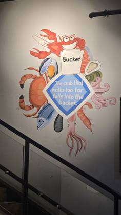

United Arab Emirates
10 restaurants · 60 photos
NZ/AU ? Mr.Crab⚠ unverified · Dubai · 8NZ/AU ?
Mr.Crab⚠ unverified · Dubai · 8NZ/AU ? Shrimp KingdomDubai · 8NZ/AU ?
Shrimp KingdomDubai · 8NZ/AU ? CLAW BBQDubai · 6NZ/AU ?
CLAW BBQDubai · 6NZ/AU ? Wicked CrabDubai · 6NZ/AU ?
Wicked CrabDubai · 6NZ/AU ? the Boil Seafood RestaurantSharjah · 6NZ/AU ?
the Boil Seafood RestaurantSharjah · 6NZ/AU ? Bangka Cajun and Creole بانغكا للمأكولات البحريةSharjah · 6NZ/AU ?
Bangka Cajun and Creole بانغكا للمأكولات البحريةSharjah · 6NZ/AU ? Crab&GrabDubai · 6NZ/AU ?
Crab&GrabDubai · 6NZ/AU ? كراب فش للمأكولات البحرية CRAB FISH SEAFOOD RESTAURANTAbu Dhabi · 4NZ/AU ?
كراب فش للمأكولات البحرية CRAB FISH SEAFOOD RESTAURANTAbu Dhabi · 4NZ/AU ? Shrimp BucketDubai · 4
Shrimp BucketDubai · 4
Mr.Crab⚠ unverified · Dubai · 8NZ/AU ?Shrimp KingdomDubai · 8NZ/AU ?CLAW BBQDubai · 6NZ/AU ?Wicked CrabDubai · 6NZ/AU ?the Boil Seafood RestaurantSharjah · 6NZ/AU ?
Bucket RestaurantSharjah · 6NZ/AU ?Bangka Cajun and Creole بانغكا للمأكولات البحريةSharjah · 6NZ/AU ?Crab&GrabDubai · 6NZ/AU ?كراب فش للمأكولات البحرية CRAB FISH SEAFOOD RESTAURANTAbu Dhabi · 4NZ/AU ?Shrimp BucketDubai · 4Every boil listing found · 10
Google Maps listings whose name says boil / crawfish / Cajun / crab etc. Swept 20 Oct 2026. Not all verified as bag boils; tap to open the listing.
Abu Dhabi · 1
- كراب فش للمأكولات البحرية CRAB FISH SEAFOOD RESTAURANT Abu Dhabi, Opens 11 AM · ★4.6 (180)
Dubai · 5
- CLAW BBQ Dubai, Opens 12 PM · ★4.5 (4,286)
- Crab&Grab - Wild Premium Seafood Dubai, Opens 11 AM · ★4.8 (53)
- Shrimp Bucket - Dubai Outlet Mall Dubai, Opens 10 AM · ★4.4 (69)
- Shrimp Kingdom Dubai · ★4.5 (937)
- Wicked Crab Dubai, Opens 12 PM · ★4.7 (2,246)
Sharjah · 4
- Bangka Cajun and Creole بانغكا للمأكولات البحرية Sharjah · ★4.8 (284)
- Bucket Restaurant Sharjah, 61 9th St · ★4.1 (287)
- The Boil Seafood Restaurant Al Karama Sharjah, 4A St · ★4.5 (65)
- the Boil Seafood Restaurant Sharjah · ★3.9 (650)